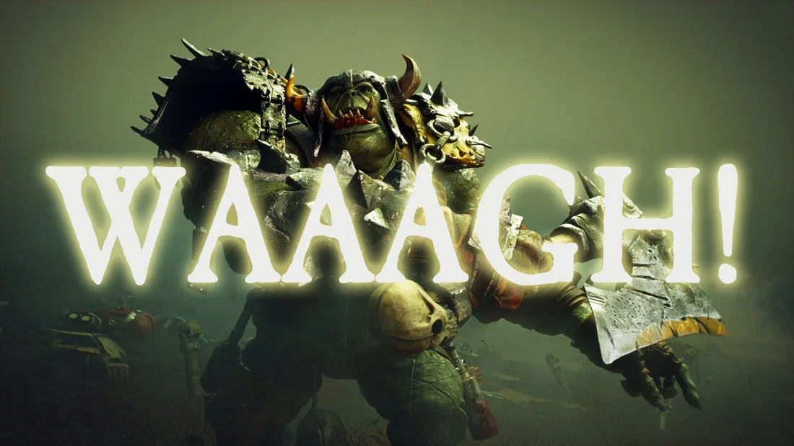

The orks are a savage green-skinned race that value warfare and violence above all else. They share many of the aspects of orcs found throughout fantasy settings and are one of the most feared races throughout the galaxy. They are less intelligent race but very significant due to their genetics and the way in which they were engineered for battle.
Origins and Biology
Ork Spores
Orks are one of the races that were created by the Old Ones to aid them in The War in Heaven. They are unique in their biology in that they are grown from fungi spores. This is similar to how the "Uruk-Hai" are grown by Sarunam in The Lord of the Rings.
This makes in particularly hard to irradicate orks entirely from a planet as they are constantly growing and being carried by winds to other locations.
The Old Ones hard-coded the Orks to be a savage and strong race that easily multiplied and in this regard they succeed (probably beyond their own intiial expectaitions). Orks by way of design also need less water and food requirements than Man and can also recover from devastating injuries as their organs are different and not as vital to life as their human counterparts.
Instinct
A Group of Ork Soldiers
Orks for the most part are not very intelligent however there are a select few of them who possess knowledge of technology and these ones are aptly named "Odd Boys". Orks instead rely entirely on their instincts for everything and this was by design.
The Old-Ones hard-coded Orks in such a way in that they did not need intelligence to thrive nor develop space-faring technology. Everything "works out" for them allowing them to focus on the things they are good at - war and violence.
Orks can literally "will" stuff into existence with their beliefs and the more orks believing a certain thing the more it actually works without knowing how. - it just happens. This means that war machines will look like a mishmash of metal parts that shouldn't work but it does work - and it works well. Orks for istance will paint their vehicles red with the belief that red will make it go faster - and it actually works.
An existance of a Machine God has been proven by Orks and Man has now realised this and try to utilize this knowledge to their advantage. There is literally a God out their helping direct these orks make machines of war that can survive space flight and the orks aren't aware of its presence.
Culture
An Angry Ork Soldier
Orks value violence above all else and thus their culture reflects that. They live in warbands where the leader is the most powerful physically. If there are no other races about to fight they will fight amongst themselves.
Orks use their teeth for currency. If you need more money just go take another orks teeth for yourself. These teeth also dissolve quite quickly to pevent the stockpiling. It is this ingenius way of teeth for currency that every ork is able to buy the neccessesities like food and shelter and don't need to work. If they work, there is less time for war so its ingenius.
Orks divvy up their duties through whatever they were hardcoded to be and categorized into roles such as: oddboyz, 'ardboyz, shootaboyz, and sluggaboyz to name a few. They don't train to become what they are they just evolve into role as has been coded into their DNA.
Religion
Gork and Mork
The Orks have two gods, Gork and Mork. Orks say that Gork is brutal but kunnin' and Mork is kunnin' but brutal. These Gods are very powerful compared to other gods and provide their Orks with visions of war and bloodlust.
One way for the Orks to pay tribute to Gork and Mork is to build massive warmachines on a sky-scraper like level. These warmachines are called Gargants and Stompas and are made by "Mekboyz" who specialise in building machines of war.
The Orks have no priests or special workers but the most powerfula nd fearsome Orks receive visions and guidance from both Mork and Gork. The Ork gods (just like orks themselves) go for the most powerful orks able to dish out the most destruction and care little for nuruturing the soul(like some other races gods focus on.)
WAAAGH!

An Ork on a WAAAGH!
The WAAAGH! is the name given by the Orks themselves to their massive military campaigns they constantly go on as they spread throughout the galaxy. This is like the thing to live for for most Orks. The Orks entire society revolves around these warplans and WAAAGH might be the defining feature of Orks.
An Ork WAAAGH! is war on an apolyptic scale with innumerable amounts of orks going from planet to planet much like a wave crashing through an ocean. Civiliasations along the way are just wiped out.
One important thing is that all orks have a passive psychic effect and it increases with the amount of orks and increases in power even more when the orks are enjoying themselves in battle. The Orks don't know what the psychic power from the warp is but they do know that it helps them even more when doing WAAAGHs in larger numbers.